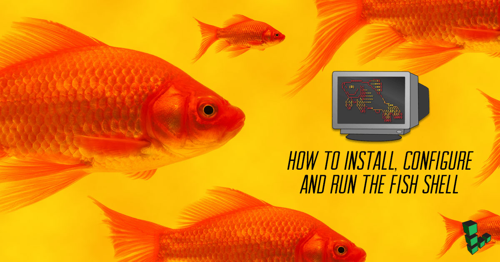
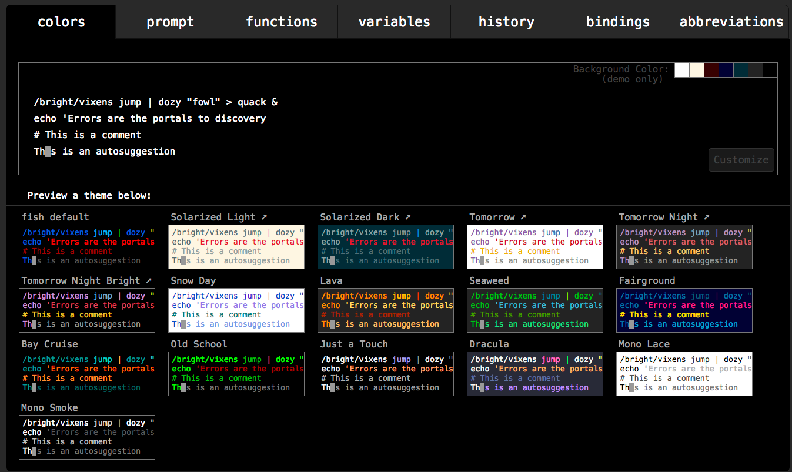
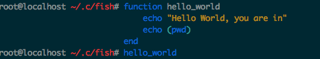
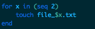
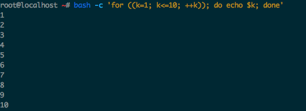

How to Install, Configure and Run the Fish Shell
Updated by Linode Written by Angel Guarisma

Fish, the Friendly Interactive Shell, is a replacement shell, which, out of the box, offers auto-suggestions; programmable completions based on installed man pages; a fully functional, readable, scripting language; and colored text support.
Install Fish
Install Fish using your distro’s package manager:
apt install fish
Start the Fish shell with the fish command:
root@localhost:~# fish
Welcome to fish, the friendly interactive shell
Customize Fish
The configuration file for Fish is located at: ~/.config/fish/config.fish. You can write commands or Fish functions to this file. The fish_config command, will load a customization server on the browser:

Regarding Fish
Fish is similar to other shells: you type commands followed by arguments.
root@localhost ~# adduser Linode
Adding user `Linode' ...
Adding new group `Linode' (1001) ...
Adding new user `Linode' (1001) with group `Linode' ...
Creating home directory `/home/Linode' ...
However, in Fish, you chain commands with ;, instead of &&:
root@localhost ~# mkdir FishDocs && cd FishDocs
Unsupported use of '&&'. In fish, please use 'COMMAND; and COMMAND'.
fish: mkdir FishDocs && cd FishDocs
^
If you can’t function without !! and &&, check this repo out for a solution.
Use Fish
Fish boasts a full-featured scripting language. You can use scripts written in Fish to do anything you would do with a scripting language, and even some cooler things, like managing your anime/drama series.
Functions
Fish does not support aliasing. Instead Fish uses functions. Typing functions into Fish will output a list of functions that exist by default:
root@localhost ~/.c/fish# functions
., N_, abbr, alias, cd, contains_seq, delete-or-exit, dirh, dirs,
down-or-search, eval, export, fish_config, fish_default_key_bindings,
fish_indent, fish_mode_prompt, fish_prompt, fish_sigtrap_handler,
fish_update_completions, fish_vi_cursor, fish_vi_key_bindings, fish_vi_mode,
funced, funcsave, grep, help, history, hostname, isatty, la, ll, ls, man, math,
mimedb, nextd, nextd-or-forward-word, open, popd, prevd, prevd-or-backward-word,
prompt_pwd, psub, pushd, seq, setenv, sgrep, trap, type, umask, up-or-search,
vared,
You can begin writing your own functions by using the syntax: functions name

You can write for loops on the fly with Fish:

You can learn more about Fish scripting in the official tutorial.
If you are a long time bash user, you may have accumulated an abundance of bash scripts, one-liners, and configurations that might make you reluctant to change shells. Fish-script is written differently than other scripting languages, but the built in bash -c command will run bash scripts from the Fish command line without hesitation.
For example, if you have a script that prints numbers 1-10:
for ((k=1; k<=10; ++k)); do echo $k; done
Expected keyword 'in', but instead found end of the statement
fish: for ((k=1; k<=10; ++k)); do echo $k; done
^
Using bash -c, you can take that same script as a string and run it without exiting Fish.

Next Steps
The best way to learn Fish is to use it. Fish is designed with The Law Of Discoverability in mind:
A program should be designed to make its features as easy as possible to discover for the user.
Rationale: A program whose features are discoverable turns a new user into an expert in a shorter span of time,
since the user will become an expert on the program simply by using it.
Follow the links in the More Information section to quickly explore the power and functionality of Fish.
More Information
You may wish to consult the following resources for additional information on this topic. While these are provided in the hope that they will be useful, please note that we cannot vouch for the accuracy or timeliness of externally hosted materials.
Join our Community
Find answers, ask questions, and help others.
This guide is published under a CC BY-ND 4.0 license.